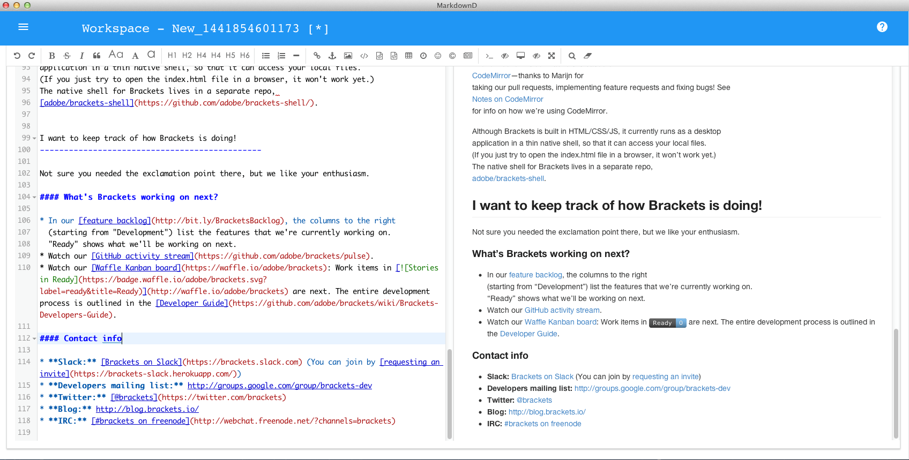

Download MarkdownD
Free | MacOS x 10.7.5 or later. Buy MarkdownD
$19.99 | MacOS x 10.7.5 or later. Get from the Apple app store
$24.99 | MacOS x 10.7.5 or later.
Free | MacOS x 10.7.5 or later. Buy MarkdownD
$19.99 | MacOS x 10.7.5 or later. Get from the Apple app store
$24.99 | MacOS x 10.7.5 or later.
MarkdownD Features
- Support standard Markdown/CommonMark and GFM (GitHub Flavored Markdown
- Live preview support
- Support formatted text, code blocks, tables, code folding, search and replace, multiple languages, HTML entity code syntax highlighting
- Support Toc (Table of Contents), Emoji expression, TaskLists (task map), @Links (link)
- Support decoding and filtering HTML tags and attributes
- Support Tex (LaTex expression, KaTeX), flow diagram and sequence diagram
- Support Document Recovery Mechanism
- Support multiple simultaneous editing, unlimited number